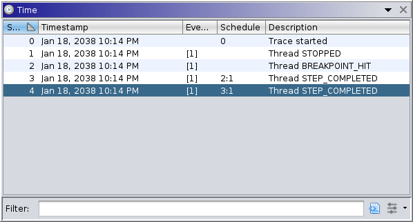

|  |
This window displays all recorded snapshots in the current trace. Typically, there is one snapshot per event recorded. Other windows often display the times of various events or use time ranges to describe lifespans of various records. Those times refer to the "snap," which is a 0-up counter of snapshot records. Thus, a snapshot is a collection of observations of a target's state, usually while suspended, along with any mark up. Selecting a snapshot navigates to the selected point in time. Note that browsing the past may prevent other windows from interacting with a live target.
The table has the following columns:
The time window provides the following action:
This toggle action is always available. It is enabled by default. The emulation service, which enables trace extrapolation and interpolation, writes emulated state into the trace's "scratch space," which comprises all negative snaps. When this toggle is enabled, those snapshots are hidden. They can be displayed by disabling this toggle. Note that navigating into scratch space may cause temporary undefined behavior in some windows, and may prevent interaction with the target.